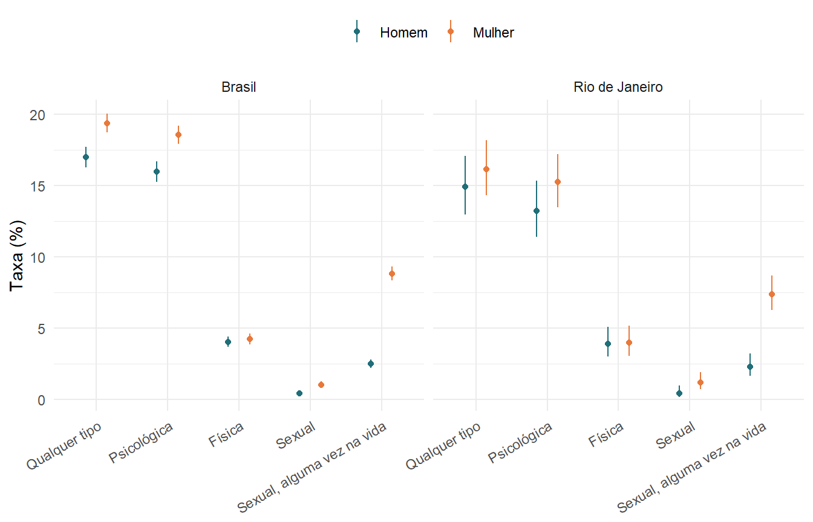
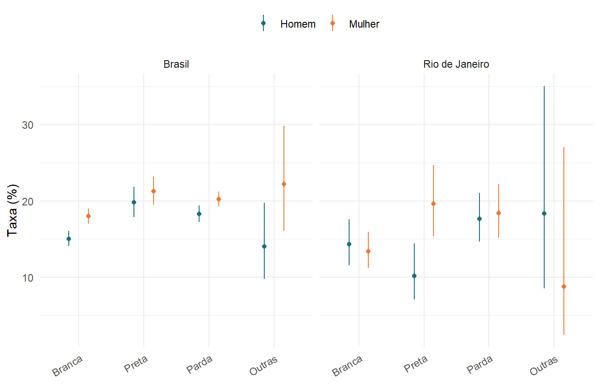
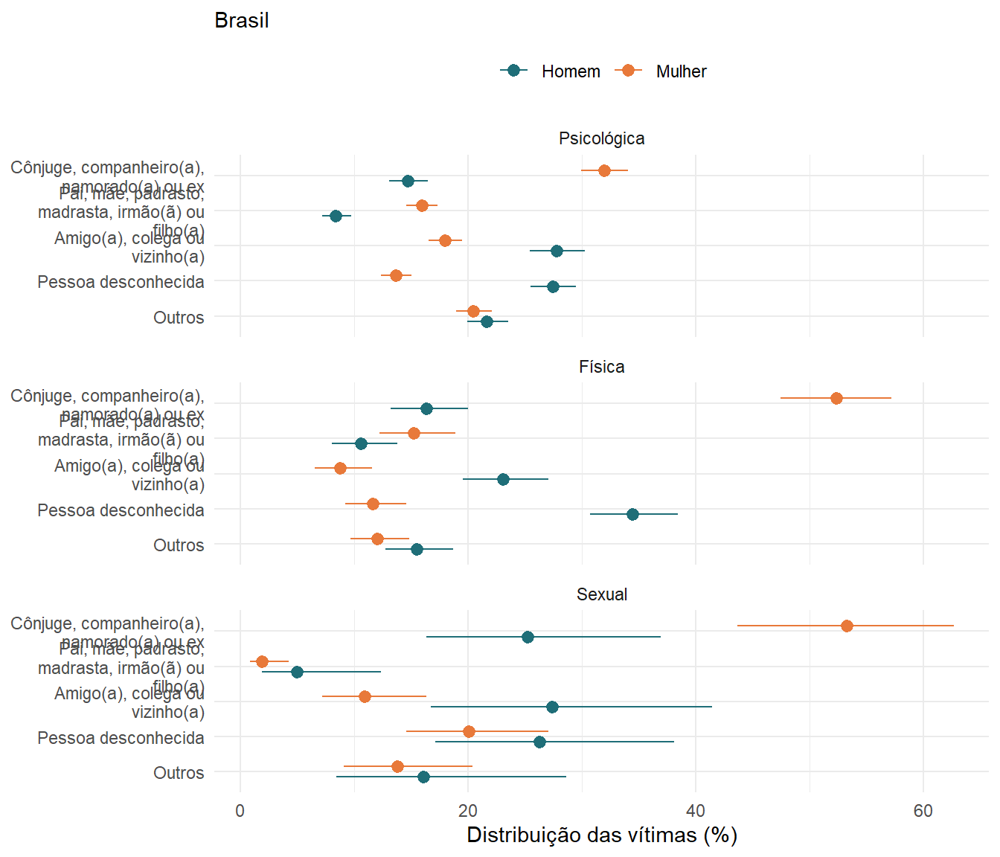
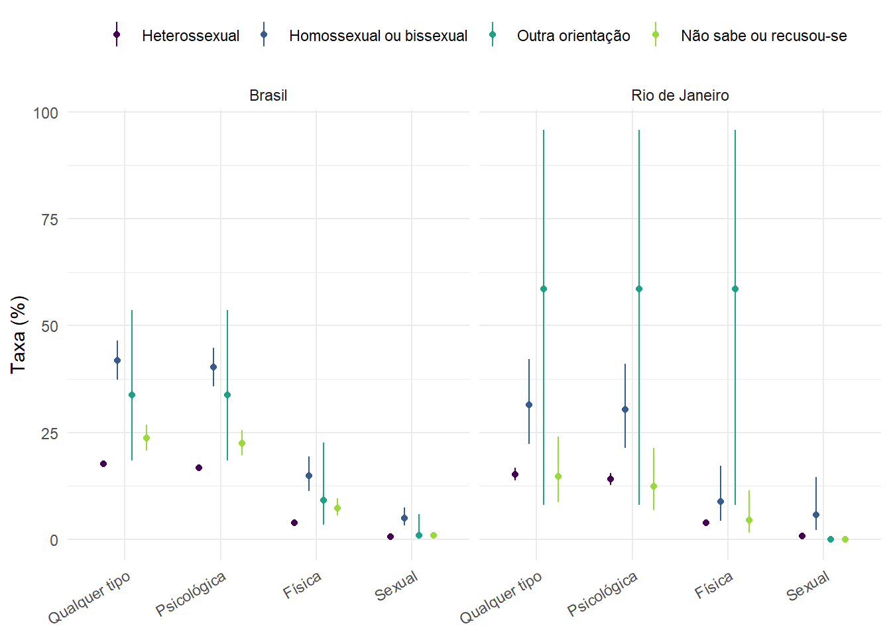
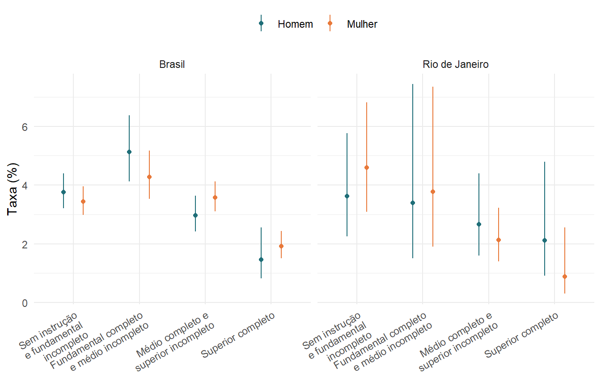
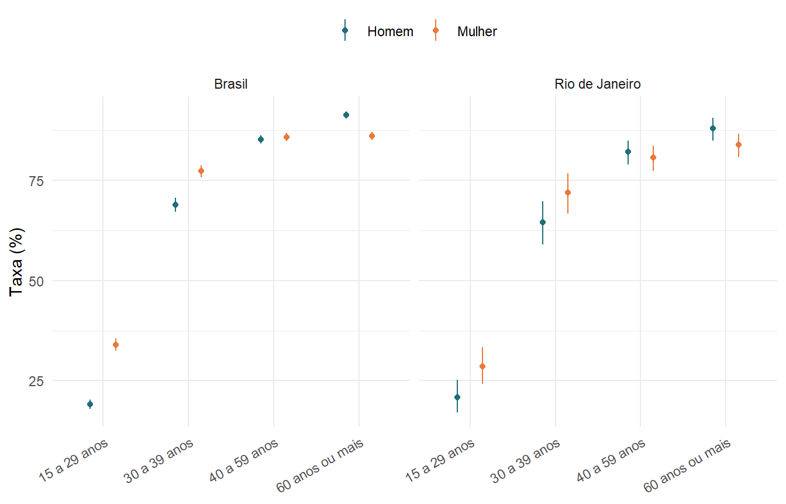

# Linhas do relatório da seção 1 até o fim da seção 5
linhas <- readLines('relatorio.qmd', encoding = 'UTF-8')
inicio <- grep('^## 1\\. ', linhas)[1]
fim <- grep('^## 6\\. ', linhas)[1] - 1
# Executa esse trecho como parte desta página, descartando o texto gerado
invisible(knitr::knit_child(text = linhas[inicio:fim], quiet = TRUE))Dia 2: violência, orientação sexual e parentalidade
3 horas · da análise das três dimensões ao indicador da turma
O Dia 2 corresponde às seções 6 a 9 do relatório completo, que roda antes as seções 1 a 5.
O segundo dia analisa as três dimensões do curso e termina com um indicador criado pela turma.
Programa
| Bloco | Conteúdo |
|---|---|
| 6. Violência por sexo | Violência psicológica, física e sexual, agressor e local por sexo, sexo e cor ou raça, teste de diferença |
| 7. Orientação sexual e grupos pequenos | Violência segundo a orientação sexual, intervalos largos, semáforo do coeficiente de variação, quando agregar ou não divulgar |
| 8. Parentalidade | Paternidade e maternidade, comparação entre pais e mães |
| 9. Seu indicador | Em grupos, com a ficha do indicador |
Ponto de partida
O Dia 2 continua de onde o Dia 1 parou. O bloco abaixo roda, sem mostrar a saída, o código das seções 1 a 5 do relatório: parâmetros, pacotes, leitura da base, recodificação e desenho amostral.
6. Violência por sexo
Funções para os testes
Os blocos 6 a 8 comparam grupos com testes de hipóteses feitos com o desenho amostral. As funções abaixo fazem cada teste para o Brasil e para os recortes e montam as frases do texto a partir dos resultados, para que o texto não dependa dos recortes escolhidos.
# Teste t da diferença entre mulheres e homens na média de uma variável (para
# uma dummy, a diferença entre as taxas, em pontos percentuais), em cada
# recorte. O svyttest() estima a diferença Mulher - Homem
testa_sexo <- function(desenho, variavel) {
lapply(recortes_estimacao, function(recorte) {
teste <- sem_avisos_inofensivos(
svyttest(reformulate('sexo', variavel), desenho_recorte(desenho, recorte))
)
tibble(
recorte = nome_recorte(recorte),
diferenca = unname(teste$estimate),
estatistica_t = unname(teste$statistic),
p_valor = teste$p.value
)
}) |>
bind_rows() |>
mutate(rejeita_h0 = p_valor < 0.05)
}
# Teste qui-quadrado de independência entre duas variáveis categóricas, com a
# correção de Rao-Scott do survey (estatística F), em cada recorte
testa_independencia <- function(desenho, variavel1, variavel2) {
lapply(recortes_estimacao, function(recorte) {
teste <- sem_avisos_inofensivos(
svychisq(reformulate(c(variavel1, variavel2)),
desenho_recorte(desenho, recorte))
)
tibble(
recorte = nome_recorte(recorte),
estatistica_f = unname(teste$statistic),
p_valor = unname(teste$p.value)
)
}) |>
bind_rows() |>
mutate(rejeita_h0 = p_valor < 0.05)
}
# p-valor no formato brasileiro, com três casas
p_valor_texto <- function(p) {
if_else(p < 0.001, '<0,001',
format(round(p, 3), nsmall = 3, decimal.mark = ','))
}
# Junta os nomes dos recortes, sem depender do artigo de cada um:
# 'no recorte Bahia', 'nos recortes Brasil, Bahia e Sul'
recortes_texto <- function(x) {
if (length(x) == 1) {
return(paste('no recorte', x))
}
paste('nos recortes',
paste(paste(x[-length(x)], collapse = ', '), 'e', x[length(x)]))
}
# A conclusão sai da decisão de cada recorte, ao nível de 5%
conclusao_teste <- function(teste) {
rejeita <- teste$recorte[teste$rejeita_h0]
nao_rejeita <- teste$recorte[!teste$rejeita_h0]
if (length(nao_rejeita) == 0) {
'a hipótese nula é rejeitada em todos os recortes'
} else if (length(rejeita) == 0) {
'a hipótese nula não é rejeitada em nenhum recorte'
} else {
paste0('a hipótese nula é rejeitada ', recortes_texto(rejeita),
', mas não ', recortes_texto(nao_rejeita))
}
}
# Os p-valores de cada recorte: 'Brasil, <0,001; Rio de Janeiro, 0,012'
p_valores_recortes <- function(teste) {
paste(teste$recorte, p_valor_texto(teste$p_valor), sep = ', ',
collapse = '; ')
}
# Tabela de um teste: recorte, estatística, p-valor e decisão
tabela_teste <- function(teste) {
teste |>
mutate(
across(any_of(c('diferenca', 'estatistica_t', 'estatistica_f')), uma_casa),
p_valor = p_valor_texto(p_valor),
rejeita_h0 = if_else(rejeita_h0, 'Sim', 'Não')
) |>
rename(any_of(c(
Recorte = 'recorte', 'Diferença M - H (p.p.)' = 'diferenca',
'Estatística t' = 'estatistica_t', 'Estatística F' = 'estatistica_f',
'p-valor' = 'p_valor', 'Rejeita H0 (5%)?' = 'rejeita_h0'
))) |>
knitr::kable(align = 'l')
}As taxas de violência
As quatro taxas de violência nos 12 meses anteriores à entrevista e a de violência sexual alguma vez na vida, por sexo, entre as pessoas de 18 anos ou mais. Uma única chamada da taxa() estima as cinco dummies.
violencia_sexo <- taxa(
desenho_adultos,
c('violencia', 'violencia_psicologica', 'violencia_fisica',
'violencia_sexual', 'violencia_sexual_vida')
)grafico_precisao(violencia_sexo, x = 'indicador')
violencia_sexo |>
arrange(recorte, indicador, sexo) |>
tabela_precisao()| Recorte | Sexo | Indicador | Estimativa (%) | EP | IC de 95% | CV (%) |
|---|---|---|---|---|---|---|
| Brasil | Homem | Qualquer tipo | 17,0 | 0,4 | 16,3 a 17,7 | 2,2 |
| Brasil | Mulher | Qualquer tipo | 19,4 | 0,3 | 18,7 a 20,0 | 1,7 |
| Brasil | Homem | Psicológica | 16,0 | 0,4 | 15,3 a 16,7 | 2,3 |
| Brasil | Mulher | Psicológica | 18,6 | 0,3 | 17,9 a 19,2 | 1,8 |
| Brasil | Homem | Física | 4,0 | 0,2 | 3,7 a 4,4 | 4,3 |
| Brasil | Mulher | Física | 4,2 | 0,2 | 3,9 a 4,7 | 4,8 |
| Brasil | Homem | Sexual | 0,4 | 0,1 | 0,3 a 0,6 | 12,9 |
| Brasil | Mulher | Sexual | 1,0 | 0,1 | 0,9 a 1,3 | 10,2 |
| Brasil | Homem | Sexual, alguma vez na vida | 2,5 | 0,1 | 2,2 a 2,8 | 5,8 |
| Brasil | Mulher | Sexual, alguma vez na vida | 8,9 | 0,2 | 8,4 a 9,3 | 2,8 |
| Rio de Janeiro | Homem | Qualquer tipo | 14,9 | 1,0 | 13,0 a 17,1 | 7,0 |
| Rio de Janeiro | Mulher | Qualquer tipo | 16,2 | 1,0 | 14,4 a 18,2 | 6,0 |
| Rio de Janeiro | Homem | Psicológica | 13,3 | 1,0 | 11,4 a 15,4 | 7,6 |
| Rio de Janeiro | Mulher | Psicológica | 15,3 | 0,9 | 13,5 a 17,2 | 6,2 |
| Rio de Janeiro | Homem | Física | 3,9 | 0,5 | 3,0 a 5,1 | 13,3 |
| Rio de Janeiro | Mulher | Física | 4,0 | 0,5 | 3,1 a 5,2 | 13,2 |
| Rio de Janeiro | Homem | Sexual | 0,4 | 0,2 | 0,2 a 1,0 | 41,9 |
| Rio de Janeiro | Mulher | Sexual | 1,2 | 0,3 | 0,7 a 1,9 | 25,2 |
| Rio de Janeiro | Homem | Sexual, alguma vez na vida | 2,3 | 0,4 | 1,7 a 3,2 | 16,8 |
| Rio de Janeiro | Mulher | Sexual, alguma vez na vida | 7,4 | 0,6 | 6,3 a 8,7 | 8,3 |
Mulheres e homens são vítimas na mesma proporção?
O teste t com o desenho amostral compara a taxa de violência (qualquer tipo) das mulheres com a dos homens:
\[ \begin{cases} H_0: p_M = p_H \\ H_1: p_M \neq p_H \end{cases} \]
em que \(p_M\) e \(p_H\) são as taxas de violência de mulheres e homens de 18 anos ou mais na população.
teste_violencia <- testa_sexo(desenho_adultos, 'violencia')
teste_violencia |>
mutate(diferenca = diferenca * 100) |>
tabela_teste()| Recorte | Diferença M - H (p.p.) | Estatística t | p-valor | Rejeita H0 (5%)? |
|---|---|---|---|---|
| Brasil | 2,4 | 5,1 | <0,001 | Sim |
| Rio de Janeiro | 1,2 | 0,9 | 0,372 | Não |
Ao nível de 5%, a hipótese nula é rejeitada no recorte Brasil, mas não no recorte Rio de Janeiro (p-valores: Brasil, <0,001; Rio de Janeiro, 0,372).
Sexo e cor ou raça
A violência não atinge da mesma forma todas as mulheres, nem todos os homens. Cruzar o sexo com a cor ou raça mostra se as desigualdades se somam. O grupo “Outras” (amarelas e indígenas) tem amostra pequena, e os seus intervalos são largos.
violencia_cor_sexo <- taxa(desenho_adultos, 'violencia', por = c('cor_raca', 'sexo'))grafico_precisao(violencia_cor_sexo, x = 'cor_raca')
violencia_cor_sexo |>
select(-indicador) |>
arrange(recorte, cor_raca, sexo) |>
tabela_precisao()| Recorte | Cor ou raça | Sexo | Estimativa (%) | EP | IC de 95% | CV (%) |
|---|---|---|---|---|---|---|
| Brasil | Branca | Homem | 15,0 | 0,5 | 14,1 a 16,1 | 3,4 |
| Brasil | Branca | Mulher | 18,0 | 0,5 | 17,0 a 19,0 | 2,8 |
| Brasil | Preta | Homem | 19,8 | 1,0 | 17,9 a 21,9 | 5,1 |
| Brasil | Preta | Mulher | 21,3 | 0,9 | 19,5 a 23,2 | 4,4 |
| Brasil | Parda | Homem | 18,3 | 0,6 | 17,2 a 19,4 | 3,0 |
| Brasil | Parda | Mulher | 20,2 | 0,5 | 19,3 a 21,2 | 2,5 |
| Brasil | Outras | Homem | 14,0 | 2,5 | 9,8 a 19,7 | 18,0 |
| Brasil | Outras | Mulher | 22,2 | 3,5 | 16,1 a 29,9 | 15,9 |
| Rio de Janeiro | Branca | Homem | 14,3 | 1,5 | 11,5 a 17,6 | 10,7 |
| Rio de Janeiro | Branca | Mulher | 13,4 | 1,2 | 11,2 a 15,9 | 9,0 |
| Rio de Janeiro | Preta | Homem | 10,2 | 1,9 | 7,1 a 14,4 | 18,2 |
| Rio de Janeiro | Preta | Mulher | 19,6 | 2,4 | 15,3 a 24,7 | 12,2 |
| Rio de Janeiro | Parda | Homem | 17,6 | 1,6 | 14,7 a 21,0 | 9,2 |
| Rio de Janeiro | Parda | Mulher | 18,4 | 1,8 | 15,2 a 22,2 | 9,7 |
| Rio de Janeiro | Outras | Homem | 18,3 | 6,7 | 8,5 a 35,1 | 36,6 |
| Rio de Janeiro | Outras | Mulher | 8,8 | 5,5 | 2,4 a 27,0 | 62,9 |
Quem agride e onde
Para cada tipo de violência, a vítima informou o agressor da única ocorrência ou da mais grave. A distribuição das vítimas por agressor é calculada entre as vítimas de cada tipo, por sexo: o desenho é recortado para as vítimas, e o denominador passa a ser o total de vítimas.
# Uma distribuição por tipo de violência, empilhadas, com o tipo na coluna
# 'tipo'
tipos_violencia <- c(
'Psicológica' = 'psicologica', 'Física' = 'fisica', 'Sexual' = 'sexual'
)
agressor_sexo <- lapply(names(tipos_violencia), function(tipo) {
sufixo <- tipos_violencia[[tipo]]
vitimas <- sem_avisos_inofensivos(subset(
desenho_adultos,
desenho_adultos$variables[[paste0('violencia_', sufixo)]] == 1
))
distribuicao(vitimas, paste0('agressor_', sufixo)) |>
mutate(tipo = factor(tipo, levels = names(tipos_violencia)), .after = recorte)
}) |>
bind_rows()agressor_sexo |>
filter(recorte == 'Brasil') |>
ggplot(aes(x = estimativa, y = categoria, colour = sexo)) +
geom_pointrange(aes(xmin = ic_inf, xmax = ic_sup),
position = position_dodge(width = 0.6)) +
facet_wrap(~ tipo, ncol = 1) +
scale_colour_manual(values = cores_sexo) +
scale_y_discrete(limits = rev, labels = \(x) str_wrap(x, 25)) +
labs(x = 'Distribuição das vítimas (%)', y = NULL, colour = NULL,
subtitle = 'Brasil') +
theme_minimal() +
theme(legend.position = 'top')
agressor_sexo |>
arrange(recorte, tipo, sexo, categoria) |>
rename(agressor = categoria) |>
tabela_precisao()| Recorte | Tipo de violência | Sexo | Agressor | Estimativa (%) | EP | IC de 95% | CV (%) |
|---|---|---|---|---|---|---|---|
| Brasil | Psicológica | Homem | Cônjuge, companheiro(a), namorado(a) ou ex | 14,7 | 0,9 | 13,1 a 16,5 | 5,9 |
| Brasil | Psicológica | Homem | Pai, mãe, padrasto, madrasta, irmão(ã) ou filho(a) | 8,4 | 0,7 | 7,2 a 9,8 | 7,8 |
| Brasil | Psicológica | Homem | Amigo(a), colega ou vizinho(a) | 27,8 | 1,2 | 25,4 a 30,2 | 4,4 |
| Brasil | Psicológica | Homem | Pessoa desconhecida | 27,5 | 1,0 | 25,5 a 29,5 | 3,7 |
| Brasil | Psicológica | Homem | Outros | 21,7 | 0,9 | 19,9 a 23,5 | 4,2 |
| Brasil | Psicológica | Mulher | Cônjuge, companheiro(a), namorado(a) ou ex | 32,0 | 1,0 | 30,0 a 34,1 | 3,3 |
| Brasil | Psicológica | Mulher | Pai, mãe, padrasto, madrasta, irmão(ã) ou filho(a) | 15,9 | 0,7 | 14,6 a 17,3 | 4,4 |
| Brasil | Psicológica | Mulher | Amigo(a), colega ou vizinho(a) | 18,0 | 0,7 | 16,6 a 19,5 | 4,1 |
| Brasil | Psicológica | Mulher | Pessoa desconhecida | 13,6 | 0,7 | 12,4 a 15,0 | 4,9 |
| Brasil | Psicológica | Mulher | Outros | 20,5 | 0,8 | 19,0 a 22,1 | 3,9 |
| Brasil | Física | Homem | Cônjuge, companheiro(a), namorado(a) ou ex | 16,3 | 1,7 | 13,2 a 20,0 | 10,6 |
| Brasil | Física | Homem | Pai, mãe, padrasto, madrasta, irmão(ã) ou filho(a) | 10,6 | 1,4 | 8,1 a 13,8 | 13,7 |
| Brasil | Física | Homem | Amigo(a), colega ou vizinho(a) | 23,1 | 1,9 | 19,6 a 27,0 | 8,3 |
| Brasil | Física | Homem | Pessoa desconhecida | 34,5 | 2,0 | 30,7 a 38,5 | 5,7 |
| Brasil | Física | Homem | Outros | 15,5 | 1,5 | 12,8 a 18,7 | 9,7 |
| Brasil | Física | Mulher | Cônjuge, companheiro(a), namorado(a) ou ex | 52,4 | 2,5 | 47,5 a 57,2 | 4,8 |
| Brasil | Física | Mulher | Pai, mãe, padrasto, madrasta, irmão(ã) ou filho(a) | 15,3 | 1,7 | 12,2 a 18,9 | 11,1 |
| Brasil | Física | Mulher | Amigo(a), colega ou vizinho(a) | 8,7 | 1,3 | 6,5 a 11,6 | 14,6 |
| Brasil | Física | Mulher | Pessoa desconhecida | 11,6 | 1,4 | 9,2 a 14,6 | 11,7 |
| Brasil | Física | Mulher | Outros | 12,0 | 1,3 | 9,7 a 14,8 | 10,9 |
| Brasil | Sexual | Homem | Cônjuge, companheiro(a), namorado(a) ou ex | 25,3 | 5,3 | 16,3 a 36,9 | 20,9 |
| Brasil | Sexual | Homem | Pai, mãe, padrasto, madrasta, irmão(ã) ou filho(a) | 4,9 | 2,4 | 1,9 a 12,3 | 48,3 |
| Brasil | Sexual | Homem | Amigo(a), colega ou vizinho(a) | 27,4 | 6,4 | 16,7 a 41,5 | 23,3 |
| Brasil | Sexual | Homem | Pessoa desconhecida | 26,3 | 5,4 | 17,1 a 38,1 | 20,6 |
| Brasil | Sexual | Homem | Outros | 16,1 | 5,1 | 8,4 a 28,6 | 31,5 |
| Brasil | Sexual | Mulher | Cônjuge, companheiro(a), namorado(a) ou ex | 53,3 | 4,9 | 43,6 a 62,7 | 9,2 |
| Brasil | Sexual | Mulher | Pai, mãe, padrasto, madrasta, irmão(ã) ou filho(a) | 1,9 | 0,8 | 0,8 a 4,2 | 41,9 |
| Brasil | Sexual | Mulher | Amigo(a), colega ou vizinho(a) | 10,9 | 2,3 | 7,2 a 16,4 | 21,1 |
| Brasil | Sexual | Mulher | Pessoa desconhecida | 20,1 | 3,2 | 14,6 a 27,1 | 15,9 |
| Brasil | Sexual | Mulher | Outros | 13,8 | 2,9 | 9,1 a 20,4 | 20,8 |
| Rio de Janeiro | Psicológica | Homem | Cônjuge, companheiro(a), namorado(a) ou ex | 7,8 | 1,6 | 5,2 a 11,5 | 20,4 |
| Rio de Janeiro | Psicológica | Homem | Pai, mãe, padrasto, madrasta, irmão(ã) ou filho(a) | 9,6 | 2,2 | 6,0 a 15,0 | 23,4 |
| Rio de Janeiro | Psicológica | Homem | Amigo(a), colega ou vizinho(a) | 19,9 | 3,0 | 14,7 a 26,4 | 15,0 |
| Rio de Janeiro | Psicológica | Homem | Pessoa desconhecida | 43,4 | 3,7 | 36,3 a 50,8 | 8,5 |
| Rio de Janeiro | Psicológica | Homem | Outros | 19,3 | 3,0 | 14,1 a 25,8 | 15,4 |
| Rio de Janeiro | Psicológica | Mulher | Cônjuge, companheiro(a), namorado(a) ou ex | 29,1 | 2,9 | 23,8 a 35,1 | 10,0 |
| Rio de Janeiro | Psicológica | Mulher | Pai, mãe, padrasto, madrasta, irmão(ã) ou filho(a) | 14,6 | 2,3 | 10,6 a 19,7 | 15,7 |
| Rio de Janeiro | Psicológica | Mulher | Amigo(a), colega ou vizinho(a) | 15,4 | 2,2 | 11,5 a 20,2 | 14,3 |
| Rio de Janeiro | Psicológica | Mulher | Pessoa desconhecida | 15,9 | 2,1 | 12,1 a 20,5 | 13,3 |
| Rio de Janeiro | Psicológica | Mulher | Outros | 25,1 | 2,7 | 20,1 a 30,8 | 10,9 |
| Rio de Janeiro | Física | Homem | Cônjuge, companheiro(a), namorado(a) ou ex | 12,8 | 5,0 | 5,7 a 26,2 | 39,2 |
| Rio de Janeiro | Física | Homem | Pai, mãe, padrasto, madrasta, irmão(ã) ou filho(a) | 5,5 | 2,5 | 2,2 a 13,2 | 46,1 |
| Rio de Janeiro | Física | Homem | Amigo(a), colega ou vizinho(a) | 26,9 | 6,8 | 15,7 a 41,9 | 25,2 |
| Rio de Janeiro | Física | Homem | Pessoa desconhecida | 37,9 | 6,1 | 26,8 a 50,4 | 16,2 |
| Rio de Janeiro | Física | Homem | Outros | 16,9 | 4,9 | 9,3 a 28,7 | 29,0 |
| Rio de Janeiro | Física | Mulher | Cônjuge, companheiro(a), namorado(a) ou ex | 41,3 | 6,2 | 29,9 a 53,7 | 15,0 |
| Rio de Janeiro | Física | Mulher | Pai, mãe, padrasto, madrasta, irmão(ã) ou filho(a) | 20,0 | 5,6 | 11,3 a 33,1 | 27,8 |
| Rio de Janeiro | Física | Mulher | Amigo(a), colega ou vizinho(a) | 8,1 | 3,2 | 3,6 a 17,1 | 40,1 |
| Rio de Janeiro | Física | Mulher | Pessoa desconhecida | 17,3 | 4,1 | 10,7 a 26,8 | 23,6 |
| Rio de Janeiro | Física | Mulher | Outros | 13,3 | 4,9 | 6,3 a 26,0 | 36,4 |
| Rio de Janeiro | Sexual | Homem | Cônjuge, companheiro(a), namorado(a) ou ex | 19,5 | 14,0 | 4,1 a 58,2 | 71,8 |
| Rio de Janeiro | Sexual | Homem | Pai, mãe, padrasto, madrasta, irmão(ã) ou filho(a) | 0,0 | 0,0 | – | – |
| Rio de Janeiro | Sexual | Homem | Amigo(a), colega ou vizinho(a) | 21,3 | 19,2 | 2,8 a 71,9 | 90,0 |
| Rio de Janeiro | Sexual | Homem | Pessoa desconhecida | 59,2 | 21,7 | 19,9 a 89,4 | 36,8 |
| Rio de Janeiro | Sexual | Homem | Outros | 0,0 | 0,0 | – | – |
| Rio de Janeiro | Sexual | Mulher | Cônjuge, companheiro(a), namorado(a) ou ex | 43,5 | 13,3 | 21,1 a 68,9 | 30,6 |
| Rio de Janeiro | Sexual | Mulher | Pai, mãe, padrasto, madrasta, irmão(ã) ou filho(a) | 3,8 | 3,8 | 0,5 a 23,1 | 99,4 |
| Rio de Janeiro | Sexual | Mulher | Amigo(a), colega ou vizinho(a) | 11,6 | 7,2 | 3,2 a 34,3 | 62,3 |
| Rio de Janeiro | Sexual | Mulher | Pessoa desconhecida | 24,7 | 11,0 | 9,3 a 51,2 | 44,6 |
| Rio de Janeiro | Sexual | Mulher | Outros | 16,4 | 7,6 | 6,2 a 36,8 | 46,5 |
O local da ocorrência completa o quadro. Para a violência física:
vitimas_fisica <- sem_avisos_inofensivos(
subset(desenho_adultos, violencia_fisica == 1)
)
local_fisica <- distribuicao(vitimas_fisica, 'local_fisica')
local_fisica |>
arrange(recorte, sexo, categoria) |>
rename(local = categoria) |>
tabela_precisao()| Recorte | Sexo | Local | Estimativa (%) | EP | IC de 95% | CV (%) |
|---|---|---|---|---|---|---|
| Brasil | Homem | Residência | 31,7 | 2,0 | 28,0 a 35,6 | 6,2 |
| Brasil | Homem | Trabalho | 10,6 | 1,3 | 8,4 a 13,4 | 12,1 |
| Brasil | Homem | Via pública ou outro local público | 42,1 | 2,2 | 37,9 a 46,5 | 5,2 |
| Brasil | Homem | Outros | 15,6 | 1,6 | 12,6 a 19,0 | 10,4 |
| Brasil | Mulher | Residência | 72,8 | 1,9 | 69,0 a 76,3 | 2,6 |
| Brasil | Mulher | Trabalho | 3,8 | 0,7 | 2,6 a 5,6 | 19,2 |
| Brasil | Mulher | Via pública ou outro local público | 17,9 | 1,6 | 15,0 a 21,1 | 8,7 |
| Brasil | Mulher | Outros | 5,5 | 0,8 | 4,1 a 7,3 | 14,8 |
| Rio de Janeiro | Homem | Residência | 31,7 | 6,0 | 21,2 a 44,4 | 19,0 |
| Rio de Janeiro | Homem | Trabalho | 7,9 | 3,1 | 3,6 a 16,3 | 38,8 |
| Rio de Janeiro | Homem | Via pública ou outro local público | 49,5 | 6,4 | 37,2 a 61,9 | 13,0 |
| Rio de Janeiro | Homem | Outros | 11,0 | 4,8 | 4,5 a 24,5 | 44,0 |
| Rio de Janeiro | Mulher | Residência | 68,4 | 5,9 | 56,0 a 78,6 | 8,6 |
| Rio de Janeiro | Mulher | Trabalho | 1,3 | 1,1 | 0,2 a 6,4 | 83,4 |
| Rio de Janeiro | Mulher | Via pública ou outro local público | 26,7 | 4,8 | 18,3 a 37,0 | 18,0 |
| Rio de Janeiro | Mulher | Outros | 3,7 | 2,7 | 0,8 a 14,7 | 73,9 |
NotaDistribuições entre as vítimas
Nas distribuições por agressor e por local, o denominador são as vítimas, e não a população. Com a violência sexual, que atinge uma parcela pequena da população, o número de vítimas na amostra é pequeno, sobretudo entre os homens e nos recortes geográficos: os intervalos ficam largos, e o bloco 7 mostra como avaliar se uma estimativa assim pode ser divulgada.
7. Orientação sexual e grupos pequenos
Violência segundo a orientação sexual
A população que se declara homossexual ou bissexual é pequena, e a amostra também. O bloco anterior comparou homens e mulheres, grupos com dezenas de milhares de pessoas na amostra cada um. Aqui, a comparação é com grupos de algumas centenas ou dezenas de pessoas. Antes de estimar, vale contar quantas pessoas da amostra há em cada grupo:
pns |>
filter(adulto == 1) |>
count(orientacao_sexual, sexo) |>
pivot_wider(names_from = sexo, values_from = n) |>
rename('Orientação sexual' = orientacao_sexual) |>
knitr::kable(align = 'l',
format.args = list(big.mark = '.', decimal.mark = ','))| Orientação sexual | Homem | Mulher |
|---|---|---|
| Heterossexual | 39.751 | 44.608 |
| Homossexual ou bissexual | 780 | 720 |
| Outra orientação | 16 | 38 |
| Não sabe ou recusou-se | 1.115 | 1.503 |
As taxas de violência por orientação sexual:
violencia_orientacao <- taxa(
desenho_adultos,
c('violencia', 'violencia_psicologica', 'violencia_fisica', 'violencia_sexual'),
por = 'orientacao_sexual'
)grafico_precisao(violencia_orientacao, x = 'indicador', cor = 'orientacao_sexual')
O semáforo do coeficiente de variação
O coeficiente de variação ajuda a decidir se uma estimativa pode ser divulgada. Não há um limite único; uma convenção comum, usada aqui, é:
- 🟢 até 15%: estimativa precisa;
- 🟡 de 15% a 30%: usar com cautela, sempre com o intervalo de confiança;
- 🔴 mais de 30%: estimativa imprecisa, que não deve ser divulgada sozinha;
- ⚪ sem casos na amostra: nenhuma pessoa da amostra no numerador. A estimativa é 0%, mas não há como medir a sua precisão: o CV e o IC não existem.
# Classificação do CV pela convenção acima
semaforo <- function(cv) {
case_when(
is.na(cv) ~ '⚪ sem casos na amostra',
cv <= 15 ~ '🟢 até 15%',
cv <= 30 ~ '🟡 15% a 30%',
.default = '🔴 mais de 30%'
)
}violencia_orientacao |>
mutate(precisao = semaforo(cv)) |>
arrange(recorte, indicador, orientacao_sexual) |>
tabela_precisao()| Recorte | Orientação sexual | Indicador | Estimativa (%) | EP | IC de 95% | CV (%) | Precisão |
|---|---|---|---|---|---|---|---|
| Brasil | Heterossexual | Qualquer tipo | 17,6 | 0,3 | 17,1 a 18,1 | 1,5 | 🟢 até 15% |
| Brasil | Homossexual ou bissexual | Qualquer tipo | 41,9 | 2,3 | 37,4 a 46,5 | 5,6 | 🟢 até 15% |
| Brasil | Outra orientação | Qualquer tipo | 33,8 | 9,3 | 18,4 a 53,6 | 27,6 | 🟡 15% a 30% |
| Brasil | Não sabe ou recusou-se | Qualquer tipo | 23,6 | 1,5 | 20,8 a 26,8 | 6,5 | 🟢 até 15% |
| Brasil | Heterossexual | Psicológica | 16,7 | 0,3 | 16,2 a 17,2 | 1,6 | 🟢 até 15% |
| Brasil | Homossexual ou bissexual | Psicológica | 40,2 | 2,3 | 35,8 a 44,9 | 5,8 | 🟢 até 15% |
| Brasil | Outra orientação | Psicológica | 33,8 | 9,3 | 18,4 a 53,6 | 27,6 | 🟡 15% a 30% |
| Brasil | Não sabe ou recusou-se | Psicológica | 22,4 | 1,5 | 19,6 a 25,5 | 6,7 | 🟢 até 15% |
| Brasil | Heterossexual | Física | 3,8 | 0,1 | 3,6 a 4,1 | 3,4 | 🟢 até 15% |
| Brasil | Homossexual ou bissexual | Física | 14,9 | 2,0 | 11,3 a 19,3 | 13,7 | 🟢 até 15% |
| Brasil | Outra orientação | Física | 9,1 | 4,5 | 3,3 a 22,6 | 49,5 | 🔴 mais de 30% |
| Brasil | Não sabe ou recusou-se | Física | 7,3 | 1,0 | 5,6 a 9,5 | 13,6 | 🟢 até 15% |
| Brasil | Heterossexual | Sexual | 0,7 | 0,1 | 0,6 a 0,8 | 9,1 | 🟢 até 15% |
| Brasil | Homossexual ou bissexual | Sexual | 5,0 | 1,0 | 3,3 a 7,4 | 20,7 | 🟡 15% a 30% |
| Brasil | Outra orientação | Sexual | 0,9 | 0,9 | 0,1 a 5,9 | 100,6 | 🔴 mais de 30% |
| Brasil | Não sabe ou recusou-se | Sexual | 0,9 | 0,2 | 0,6 a 1,4 | 21,8 | 🟡 15% a 30% |
| Rio de Janeiro | Heterossexual | Qualquer tipo | 15,2 | 0,7 | 13,8 a 16,8 | 4,9 | 🟢 até 15% |
| Rio de Janeiro | Homossexual ou bissexual | Qualquer tipo | 31,4 | 5,1 | 22,3 a 42,2 | 16,3 | 🟡 15% a 30% |
| Rio de Janeiro | Outra orientação | Qualquer tipo | 58,5 | 34,5 | 8,0 a 95,8 | 59,0 | 🔴 mais de 30% |
| Rio de Janeiro | Não sabe ou recusou-se | Qualquer tipo | 14,7 | 3,9 | 8,6 a 24,0 | 26,3 | 🟡 15% a 30% |
| Rio de Janeiro | Heterossexual | Psicológica | 14,0 | 0,7 | 12,7 a 15,5 | 5,0 | 🟢 até 15% |
| Rio de Janeiro | Homossexual ou bissexual | Psicológica | 30,3 | 5,1 | 21,3 a 41,1 | 16,8 | 🟡 15% a 30% |
| Rio de Janeiro | Outra orientação | Psicológica | 58,5 | 34,5 | 8,0 a 95,8 | 59,0 | 🔴 mais de 30% |
| Rio de Janeiro | Não sabe ou recusou-se | Psicológica | 12,4 | 3,6 | 6,8 a 21,4 | 29,3 | 🟡 15% a 30% |
| Rio de Janeiro | Heterossexual | Física | 3,8 | 0,4 | 3,1 a 4,6 | 10,0 | 🟢 até 15% |
| Rio de Janeiro | Homossexual ou bissexual | Física | 8,8 | 3,1 | 4,4 a 17,1 | 35,2 | 🔴 mais de 30% |
| Rio de Janeiro | Outra orientação | Física | 58,5 | 34,5 | 8,0 a 95,8 | 59,0 | 🔴 mais de 30% |
| Rio de Janeiro | Não sabe ou recusou-se | Física | 4,4 | 2,2 | 1,6 a 11,5 | 50,6 | 🔴 mais de 30% |
| Rio de Janeiro | Heterossexual | Sexual | 0,8 | 0,2 | 0,5 a 1,2 | 23,9 | 🟡 15% a 30% |
| Rio de Janeiro | Homossexual ou bissexual | Sexual | 5,8 | 2,8 | 2,2 a 14,6 | 49,1 | 🔴 mais de 30% |
| Rio de Janeiro | Outra orientação | Sexual | 0,0 | 0,0 | – | – | ⚪ sem casos na amostra |
| Rio de Janeiro | Não sabe ou recusou-se | Sexual | 0,0 | 0,0 | – | – | ⚪ sem casos na amostra |
O semáforo fica vermelho com mais frequência na categoria “Outra orientação”, que tem poucas dezenas de pessoas na amostra, e nos recortes geográficos. Quando a estimativa de um grupo é imprecisa, há três caminhos: agregar o grupo a outro com sentido teórico próximo, agregar o território (uma Grande Região em vez de uma UF, ou o Brasil), ou não divulgar a estimativa. Os três têm custos: agregar esconde diferenças dentro do grupo novo, e não divulgar tira o grupo da análise.
Agregar ou separar?
As publicações do IBGE juntam homossexuais e bissexuais. Separar os dois grupos mostra o que a agregação esconde, e o que custa em precisão:
# A orientação sexual com homossexuais e bissexuais separados. O update()
# acrescenta a variável ao desenho, sem refazê-lo
desenho_detalhado <- update(
desenho_adultos,
orientacao_detalhada = factor(case_when(
Y008 == 1 ~ 'Heterossexual',
Y008 == 2 ~ 'Bissexual',
Y008 == 3 ~ 'Homossexual'
), levels = c('Heterossexual', 'Homossexual', 'Bissexual'))
)
violencia_orientacao_detalhada <- taxa(
desenho_detalhado, 'violencia', por = c('orientacao_detalhada', 'sexo')
)
violencia_orientacao_detalhada |>
select(-indicador) |>
mutate(precisao = semaforo(cv)) |>
arrange(recorte, orientacao_detalhada, sexo) |>
tabela_precisao()| Recorte | Orientação sexual | Sexo | Estimativa (%) | EP | IC de 95% | CV (%) | Precisão |
|---|---|---|---|---|---|---|---|
| Brasil | Heterossexual | Homem | 16,4 | 0,4 | 15,6 a 17,1 | 2,3 | 🟢 até 15% |
| Brasil | Heterossexual | Mulher | 18,7 | 0,3 | 18,1 a 19,4 | 1,8 | 🟢 até 15% |
| Brasil | Homossexual | Homem | 38,2 | 3,7 | 31,2 a 45,7 | 9,7 | 🟢 até 15% |
| Brasil | Homossexual | Mulher | 35,9 | 4,1 | 28,3 a 44,4 | 11,5 | 🟢 até 15% |
| Brasil | Bissexual | Homem | 46,8 | 6,9 | 33,8 a 60,2 | 14,8 | 🟢 até 15% |
| Brasil | Bissexual | Mulher | 51,3 | 5,0 | 41,7 a 60,9 | 9,7 | 🟢 até 15% |
| Rio de Janeiro | Heterossexual | Homem | 14,3 | 1,1 | 12,4 a 16,5 | 7,3 | 🟢 até 15% |
| Rio de Janeiro | Heterossexual | Mulher | 16,0 | 1,0 | 14,1 a 18,1 | 6,4 | 🟢 até 15% |
| Rio de Janeiro | Homossexual | Homem | 35,9 | 7,9 | 22,2 a 52,3 | 22,1 | 🟡 15% a 30% |
| Rio de Janeiro | Homossexual | Mulher | 32,4 | 8,9 | 17,7 a 51,6 | 27,6 | 🟡 15% a 30% |
| Rio de Janeiro | Bissexual | Homem | 12,4 | 12,0 | 1,6 a 55,0 | 96,2 | 🔴 mais de 30% |
| Rio de Janeiro | Bissexual | Mulher | 34,8 | 11,0 | 17,2 a 57,9 | 31,5 | 🔴 mais de 30% |
A violência depende da orientação sexual?
O teste qui-quadrado de independência verifica se a violência (qualquer tipo) e a orientação sexual estão associadas:
\[ \begin{cases} H_0: \text{a violência é independente da orientação sexual} \\ H_1: \text{a violência não é independente da orientação sexual} \end{cases} \]
teste_orientacao <- testa_independencia(desenho_adultos, 'violencia',
'orientacao_sexual')
tabela_teste(teste_orientacao)| Recorte | Estatística F | p-valor | Rejeita H0 (5%)? |
|---|---|---|---|
| Brasil | 74,1 | <0,001 | Sim |
| Rio de Janeiro | 6,4 | <0,001 | Sim |
Ao nível de 5%, a hipótese nula é rejeitada em todos os recortes (p-valores: Brasil, <0,001; Rio de Janeiro, <0,001). Com grupos pequenos, o teste tem pouco poder: não rejeitar a hipótese nula num recorte pode significar só que a amostra não basta para detectar a diferença. Nos recortes com poucas pessoas em alguma combinação de categorias, o svychisq() pode avisar que a aproximação do qui-quadrado pode estar incorreta. Esse aviso não é escondido, porque é um alerta real sobre a qualidade do teste.
Quem não respondeu
A taxa de pessoas que não sabem ou se recusaram a responder a orientação sexual também é um resultado. Ela mostra onde a pergunta encontra mais dificuldade, por exemplo entre as pessoas com menos anos de estudo, para quem termos como “heterossexual” podem ser pouco familiares.
nao_resposta_instrucao <- taxa(desenho_adultos, 'orientacao_nao_respondida',
por = c('instrucao', 'sexo'))nao_resposta_instrucao |>
mutate(instrucao = str_wrap(instrucao, 20),
instrucao = factor(instrucao, levels = unique(instrucao))) |>
grafico_precisao(x = 'instrucao')
8. Parentalidade
Ter filhos, para homens e mulheres
A taxa de homens que já tiveram filho biológico e a de mulheres que já tiveram parto, por grupo de idade. Lembre que as duas perguntas não são iguais (bloco 4). Os grupos de idade começam aos 15 anos, como nas publicações do IBGE.
tem_filho_idade <- taxa(desenho, 'tem_filho', por = c('faixa_etaria_15', 'sexo'))grafico_precisao(tem_filho_idade, x = 'faixa_etaria_15')
tem_filho_idade |>
select(-indicador) |>
arrange(recorte, faixa_etaria_15, sexo) |>
tabela_precisao()| Recorte | Grupo de idade | Sexo | Estimativa (%) | EP | IC de 95% | CV (%) |
|---|---|---|---|---|---|---|
| Brasil | 15 a 29 anos | Homem | 19,0 | 0,6 | 17,9 a 20,2 | 3,0 |
| Brasil | 15 a 29 anos | Mulher | 34,0 | 0,8 | 32,5 a 35,5 | 2,2 |
| Brasil | 30 a 39 anos | Homem | 68,9 | 0,9 | 67,2 a 70,6 | 1,3 |
| Brasil | 30 a 39 anos | Mulher | 77,3 | 0,8 | 75,8 a 78,8 | 1,0 |
| Brasil | 40 a 59 anos | Homem | 85,3 | 0,5 | 84,3 a 86,2 | 0,6 |
| Brasil | 40 a 59 anos | Mulher | 85,9 | 0,5 | 84,8 a 86,8 | 0,6 |
| Brasil | 60 anos ou mais | Homem | 91,4 | 0,4 | 90,5 a 92,2 | 0,5 |
| Brasil | 60 anos ou mais | Mulher | 86,1 | 0,5 | 85,0 a 87,1 | 0,6 |
| Rio de Janeiro | 15 a 29 anos | Homem | 20,9 | 2,1 | 17,1 a 25,2 | 9,9 |
| Rio de Janeiro | 15 a 29 anos | Mulher | 28,5 | 2,3 | 24,2 a 33,3 | 8,1 |
| Rio de Janeiro | 30 a 39 anos | Homem | 64,6 | 2,7 | 59,0 a 69,8 | 4,3 |
| Rio de Janeiro | 30 a 39 anos | Mulher | 72,0 | 2,6 | 66,7 a 76,8 | 3,6 |
| Rio de Janeiro | 40 a 59 anos | Homem | 82,1 | 1,5 | 79,0 a 84,9 | 1,8 |
| Rio de Janeiro | 40 a 59 anos | Mulher | 80,6 | 1,6 | 77,3 a 83,6 | 2,0 |
| Rio de Janeiro | 60 anos ou mais | Homem | 88,0 | 1,4 | 84,9 a 90,6 | 1,6 |
| Rio de Janeiro | 60 anos ou mais | Mulher | 84,0 | 1,5 | 80,8 a 86,7 | 1,8 |
O número médio de filhos (homens) e de partos (mulheres), pelos mesmos grupos de idade:
numero_filhos_idade <- media(desenho, 'numero_filhos',
por = c('faixa_etaria_15', 'sexo'))
numero_filhos_idade |>
arrange(recorte, faixa_etaria_15, sexo) |>
tabela_precisao(unidade = 'filhos ou partos')| Recorte | Grupo de idade | Sexo | Estimativa (filhos ou partos) | EP | IC de 95% | CV (%) |
|---|---|---|---|---|---|---|
| Brasil | 15 a 29 anos | Homem | 0,3 | 0,0 | 0,2 a 0,3 | 3,0 |
| Brasil | 15 a 29 anos | Mulher | 0,6 | 0,0 | 0,5 a 0,6 | 2,7 |
| Brasil | 30 a 39 anos | Homem | 1,3 | 0,0 | 1,2 a 1,3 | 1,5 |
| Brasil | 30 a 39 anos | Mulher | 1,7 | 0,0 | 1,6 a 1,7 | 1,5 |
| Brasil | 40 a 59 anos | Homem | 2,1 | 0,0 | 2,1 a 2,2 | 1,1 |
| Brasil | 40 a 59 anos | Mulher | 2,4 | 0,0 | 2,3 a 2,4 | 1,1 |
| Brasil | 60 anos ou mais | Homem | 3,6 | 0,0 | 3,6 a 3,7 | 1,1 |
| Brasil | 60 anos ou mais | Mulher | 3,9 | 0,0 | 3,8 a 4,0 | 1,2 |
| Rio de Janeiro | 15 a 29 anos | Homem | 0,3 | 0,0 | 0,2 a 0,4 | 11,0 |
| Rio de Janeiro | 15 a 29 anos | Mulher | 0,4 | 0,0 | 0,4 a 0,5 | 9,2 |
| Rio de Janeiro | 30 a 39 anos | Homem | 1,2 | 0,1 | 1,0 a 1,3 | 6,4 |
| Rio de Janeiro | 30 a 39 anos | Mulher | 1,4 | 0,1 | 1,2 a 1,5 | 5,8 |
| Rio de Janeiro | 40 a 59 anos | Homem | 1,8 | 0,1 | 1,7 a 1,9 | 3,2 |
| Rio de Janeiro | 40 a 59 anos | Mulher | 1,8 | 0,1 | 1,7 a 1,9 | 3,2 |
| Rio de Janeiro | 60 anos ou mais | Homem | 2,5 | 0,1 | 2,3 a 2,7 | 3,9 |
| Rio de Janeiro | 60 anos ou mais | Mulher | 2,8 | 0,1 | 2,6 a 3,0 | 4,1 |
A idade dos homens no nascimento do primeiro filho
A idade ao nascimento do primeiro filho só foi perguntada aos homens. A média é calculada entre os homens que já tiveram filho biológico, por cor ou raça:
pais <- sem_avisos_inofensivos(subset(desenho, pai == 1))
idade_primeiro_filho <- media(pais, 'idade_primeiro_filho', por = 'cor_raca')
idade_primeiro_filho |>
arrange(recorte, cor_raca) |>
tabela_precisao(unidade = 'anos')| Recorte | Cor ou raça | Estimativa (anos) | EP | IC de 95% | CV (%) |
|---|---|---|---|---|---|
| Brasil | Branca | 26,8 | 0,1 | 26,6 a 27,0 | 0,4 |
| Brasil | Preta | 25,1 | 0,2 | 24,8 a 25,4 | 0,6 |
| Brasil | Parda | 25,1 | 0,1 | 24,9 a 25,2 | 0,3 |
| Brasil | Outras | 26,3 | 0,5 | 25,3 a 27,3 | 1,9 |
| Rio de Janeiro | Branca | 26,9 | 0,3 | 26,4 a 27,4 | 1,0 |
| Rio de Janeiro | Preta | 25,6 | 0,4 | 24,9 a 26,3 | 1,4 |
| Rio de Janeiro | Parda | 25,9 | 0,3 | 25,3 a 26,5 | 1,2 |
| Rio de Janeiro | Outras | 25,7 | 1,9 | 22,0 a 29,4 | 7,4 |
A participação dos homens no pré-natal
Entre os homens com mulher grávida ou com filho de menos de 6 anos, a taxa dos que acompanharam o pré-natal, por situação do domicílio:
homens_prenatal <- sem_avisos_inofensivos(
subset(desenho, !is.na(acompanhou_prenatal))
)
prenatal_situacao <- taxa(homens_prenatal, 'acompanhou_prenatal',
por = 'situacao')
prenatal_situacao |>
select(-indicador) |>
mutate(precisao = semaforo(cv)) |>
arrange(recorte, situacao) |>
tabela_precisao()| Recorte | Situação do domicílio | Estimativa (%) | EP | IC de 95% | CV (%) | Precisão |
|---|---|---|---|---|---|---|
| Brasil | Urbana | 79,1 | 0,9 | 77,3 a 80,8 | 1,1 | 🟢 até 15% |
| Brasil | Rural | 65,5 | 1,6 | 62,3 a 68,5 | 2,4 | 🟢 até 15% |
| Rio de Janeiro | Urbana | 83,3 | 2,5 | 77,8 a 87,6 | 3,0 | 🟢 até 15% |
| Rio de Janeiro | Rural | 53,7 | 23,5 | 15,4 a 88,1 | 43,7 | 🔴 mais de 30% |
Pais e mães jovens: uma regressão
Entre as pessoas de 15 a 29 anos, a chance de já ter tido filho (homens) ou parto (mulheres) depende do sexo, da cor ou raça, do nível de instrução e da situação do domicílio. Uma regressão logística com o desenho amostral (svyglm() com family = quasibinomial()) estima o efeito de cada característica mantendo as outras fixas. O resultado é apresentado como razão de chances: acima de 1, a categoria tem mais chance de ter filho que a categoria de referência (homem, branca, sem instrução e fundamental incompleto, urbana); abaixo de 1, menos. A regressão é feita só para o Brasil.
jovens <- sem_avisos_inofensivos(
subset(desenho, idade <= 29 & cor_raca != 'Outras')
)
modelo_filho <- sem_avisos_inofensivos(
svyglm(tem_filho ~ sexo + cor_raca + instrucao + situacao,
design = jovens, family = quasibinomial())
)
# Razões de chances e IC: exp() dos coeficientes e dos limites
razoes_chances <- sem_avisos_inofensivos(
tidy(modelo_filho, conf.int = TRUE, exponentiate = TRUE)
) |>
filter(term != '(Intercept)')
# Nome legível de cada termo: a variável (pelos rótulos) e a categoria
rotulo_termo <- function(termo) {
variavel <- names(rotulos)[sapply(names(rotulos), \(v) startsWith(termo, v))][1]
paste0(rotulos[[variavel]], ': ', str_remove(termo, variavel))
}
razoes_chances |>
mutate(
Termo = sapply(term, rotulo_termo),
'Razão de chances' = uma_casa(estimate),
'IC de 95%' = paste0(uma_casa(conf.low), ' a ', uma_casa(conf.high)),
'p-valor' = p_valor_texto(p.value)
) |>
select(Termo, 'Razão de chances', 'IC de 95%', 'p-valor') |>
knitr::kable(align = 'l')| Termo | Razão de chances | IC de 95% | p-valor |
|---|---|---|---|
| Sexo: Mulher | 2,4 | 2,2 a 2,7 | <0,001 |
| Cor ou raça: Preta | 1,9 | 1,6 a 2,2 | <0,001 |
| Cor ou raça: Parda | 1,7 | 1,5 a 1,9 | <0,001 |
| Nível de instrução: Fundamental completo e médio incompleto | 0,6 | 0,5 a 0,7 | <0,001 |
| Nível de instrução: Médio completo e superior incompleto | 0,6 | 0,5 a 0,7 | <0,001 |
| Nível de instrução: Superior completo | 0,4 | 0,3 a 0,5 | <0,001 |
| Situação do domicílio: Rural | 1,2 | 1,1 a 1,4 | <0,001 |
Mantidas as outras características, a chance de uma mulher de 15 a 29 anos já ter tido parto é 2,4 vez(es) a chance de um homem da mesma idade já ter tido filho. Parte dessa diferença vem das próprias perguntas: as mulheres respondem sobre partos, e os homens sobre filhos que conhecem.
9. Seu indicador
Para fechar, cada grupo cria um indicador novo, de preferência cruzando duas dimensões do curso, e o acrescenta ao relatório. O caminho é o mesmo dos blocos anteriores: definir o indicador, criar a dummy, estimar com o desenho, apresentar e testar.
Em grupos, preencham a ficha do indicador, calculem o indicador com o desenho amostral, apresentem o resultado numa tabela com o semáforo do CV e testem uma comparação. Depois, incluam o resultado no relatório.
O exemplo abaixo mostra o caminho completo para um indicador que cruza a violência e as relações próximas.
# 1. A dummy do numerador, criada no desenho com o update(). O %in% trata
# como "não" quem não foi vítima (agressor NA)
parceiro <- 'Cônjuge, companheiro(a), namorado(a) ou ex'
desenho_adultos <- update(
desenho_adultos,
violencia_parceiro = if_else(
agressor_psicologica %in% parceiro | agressor_fisica %in% parceiro |
agressor_sexual %in% parceiro, 1, 0
)
)
# 2. A taxa por sexo, para o Brasil e os recortes
violencia_parceiro <- taxa(desenho_adultos, 'violencia_parceiro')violencia_parceiro |>
select(-indicador) |>
mutate(precisao = semaforo(cv)) |>
arrange(recorte, sexo) |>
tabela_precisao()| Recorte | Sexo | Estimativa (%) | EP | IC de 95% | CV (%) | Precisão |
|---|---|---|---|---|---|---|
| Brasil | Homem | 2,6 | 0,2 | 2,3 a 2,9 | 6,0 | 🟢 até 15% |
| Brasil | Mulher | 6,4 | 0,2 | 5,9 a 6,8 | 3,7 | 🟢 até 15% |
| Rio de Janeiro | Homem | 1,3 | 0,3 | 0,9 a 2,0 | 21,6 | 🟡 15% a 30% |
| Rio de Janeiro | Mulher | 4,7 | 0,5 | 3,8 a 5,9 | 11,6 | 🟢 até 15% |
# 3. A comparação: a diferença entre as taxas de mulheres e homens
teste_parceiro <- testa_sexo(desenho_adultos, 'violencia_parceiro')
teste_parceiro |>
mutate(diferenca = diferenca * 100) |>
tabela_teste()| Recorte | Diferença M - H (p.p.) | Estatística t | p-valor | Rejeita H0 (5%)? |
|---|---|---|---|---|
| Brasil | 3,8 | 13,3 | <0,001 | Sim |
| Rio de Janeiro | 3,4 | 5,6 | <0,001 | Sim |
Ao nível de 5%, a hipótese nula é rejeitada em todos os recortes (p-valores: Brasil, <0,001; Rio de Janeiro, <0,001).
Encerramento
O mesmo relatório pode ser renderizado para outro recorte geográfico: basta mudar o parâmetro recortes, porque a base e o desenho já baixados têm todo o Brasil.